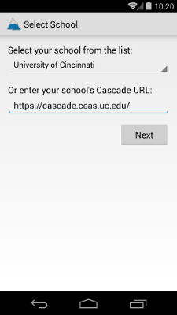
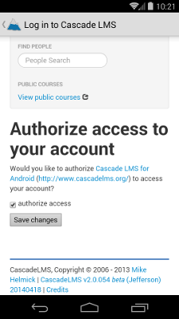
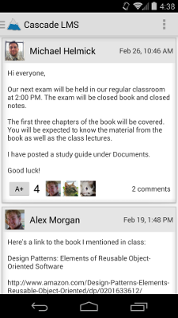
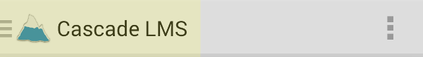
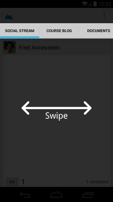
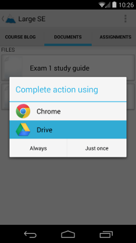
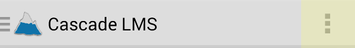
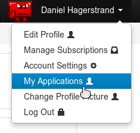
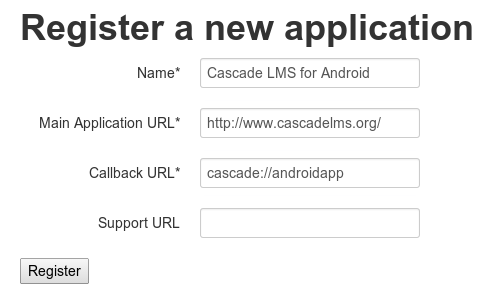

Cascade LMS is an online learning management system that combines courseware with social networking. With Cascade, you can keep in touch with your professors and classmates while viewing course documents and checking on your grades.
With Cascade LMS for Android, you can access Cascade from anywhere. View Social Stream status updates and announcements, read the Course Blog, download Documents, and check on your Assignments and Grades, all from your Android smartphone or tablet.
When you open the app for the first time, you will be asked to select a school. Tap the dropdown to open a list of schools, then tap on the name of your school. If your school is not in the list, type the full URL to your school's Cascade installation. Tap Next to continue.
Next, you must log into Cascade LMS. A web browser will open for you. Log in like you normally would when accessing Cascade from the web. After you log in successfully, you will be asked to authorize the app to access your account. Check the box labeled "authorize access", then tap "Save changes".
After that, you should be logged in!
When logged in, the first thing you'll see is the Social Stream. Here, you will see announcements and status updates from all of your courses combined into one view for your convenience. Tap on any post to view comments.
To access your courses, tap on the title at the top of the screen:
The list of courses you are taking will appear. Simply tap on the course you would like to go to. To navigate between information in the course, tap on the tabs above, or swipe your finger left or right.
In addition to viewing course information, you can also download Documents simply by tapping on them under the Documents section. If the Document is hosted within Cascade itself, tapping on its entry will start the download in the background. Swipe down from the top of the screen to view progress and open the Document when the download has finished. If the document is hosted outside of Cascade (for example, on Google Drive), your web browser will open. If multiple apps can handle the Document, a menu will open asking which one you would like to use.
To log out of the app, tap on the overflow button (vertical ellipsis) in the top right corner.
Tap "Log out". You will be returned to the "Select School" screen.
Cascade LMS for Android uses the OAuth standard to provide authentication. Because the consumer key and consumer secret — which are required to authenticate — are not provided, you will need to register the app to generate your own key and secret if you are building the app from source code. First, log into Cascade LMS in your desktop web browser. Click on your name in the top right corner and select My Applications.
On the following screen, click on "Register your application". You will need to enter the name of the app, main application URL, and the callback URL. The name and app URL can be anything you like, but the callback URL must be cascade://androidapp or else authentication will not work.
Click "Register" and you will receive the consumer key and consumer secret, which will allow you to log in through the app. Enjoy!